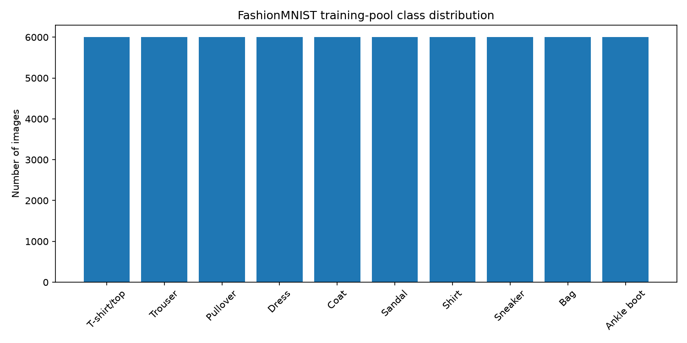
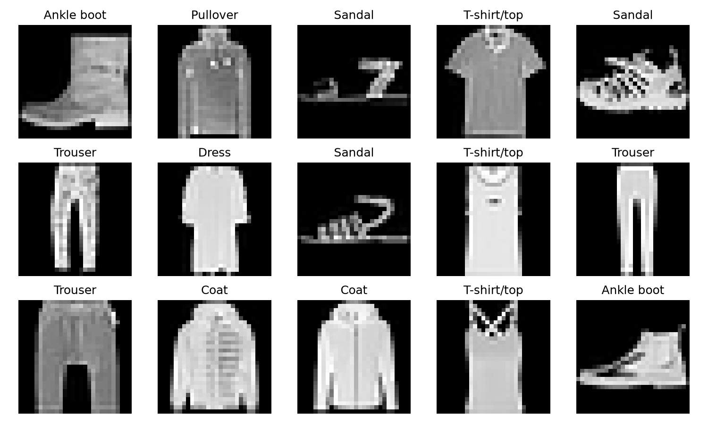
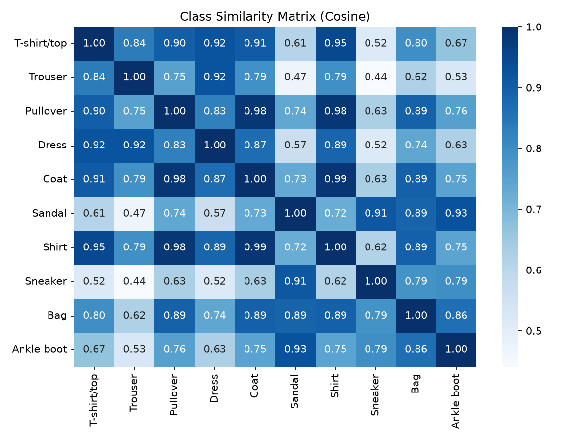
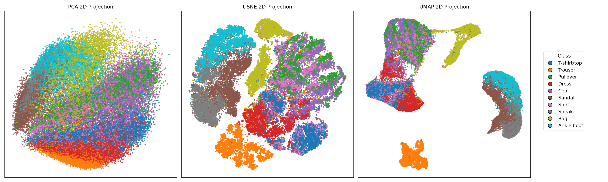
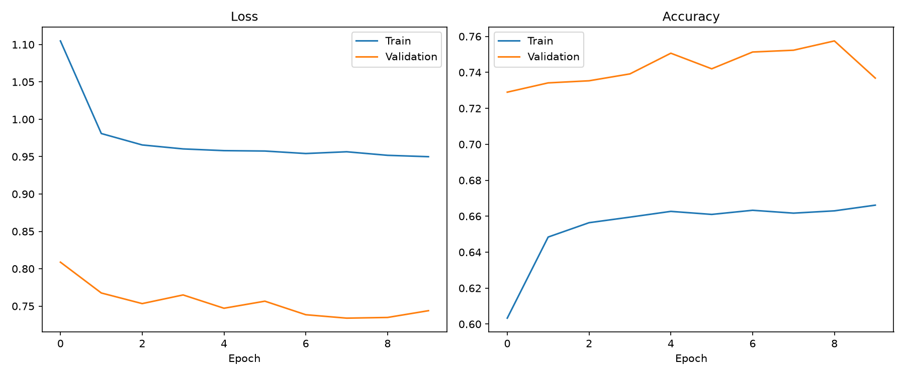
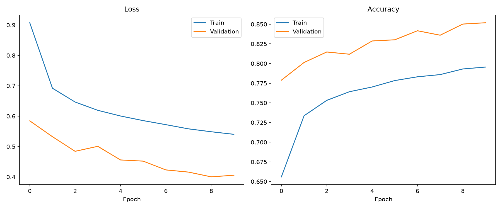
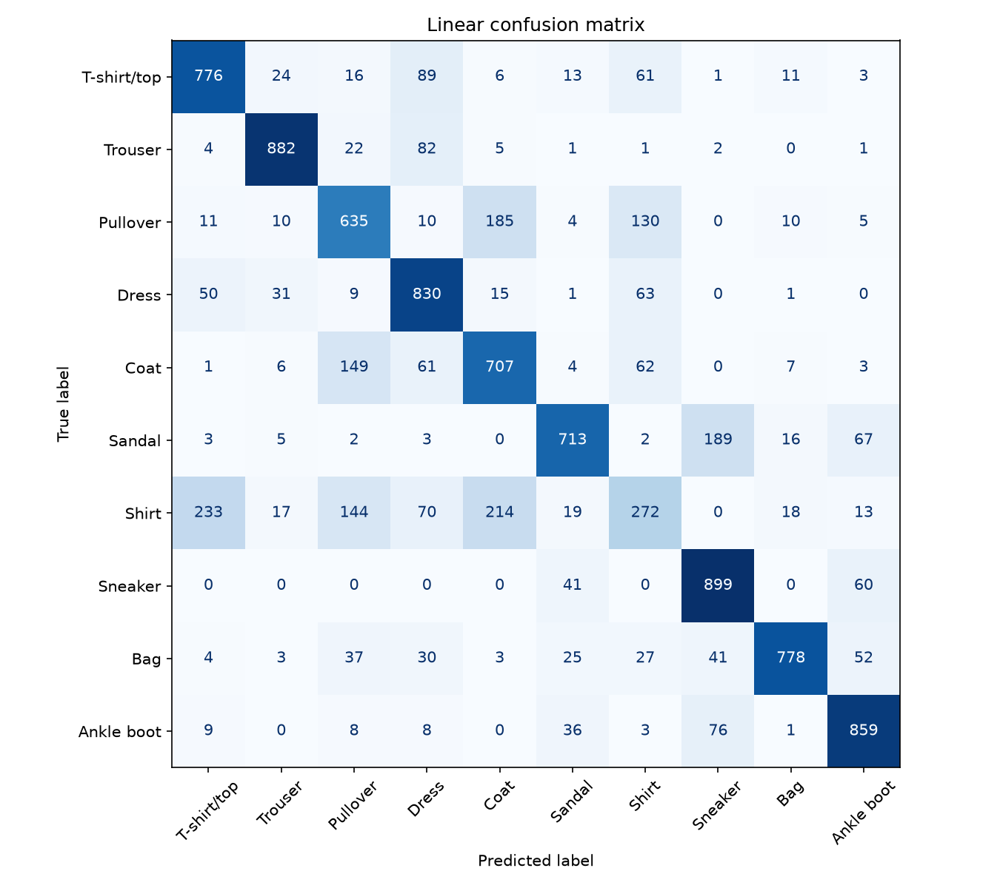
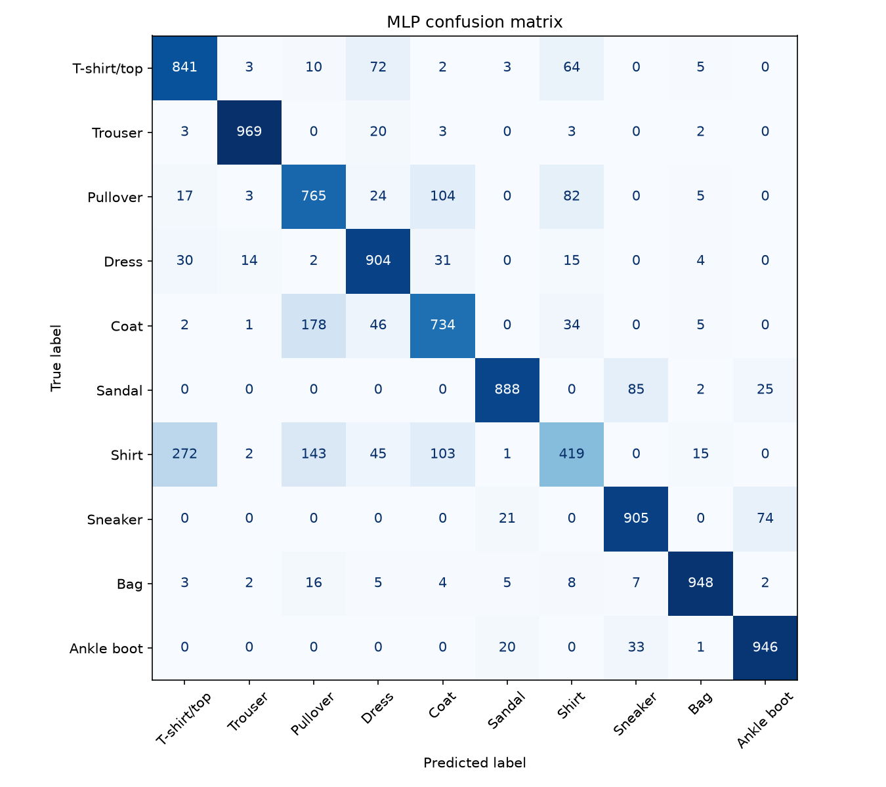

Problem Statement & Scope
The goal of Assignment 1 is to build an end-to-end deep learning pipeline for controlled-scale image classification, comparing five distinct neural architecture families under strict fairness constraints (same data split, identical evaluation protocol, and seed controls).
- Development & Debugging Dataset: MNIST
- Primary Results Dataset: Fashion-MNIST (10 classes, 28x28 grayscale images)
- Optional Extension: CIFAR-10 dataset evaluation
- Mandatory Models: Linear/Softmax, MLP, CNN, LSTM/GRU, Transformer
Dataset Description & Exploratory Data Analysis
Primary Dataset: Fashion-MNIST (70,000 images total — 60,000 train, 10,000 test).
Split Policy: 54,000 Train / 6,000 Validation (10%, stratified) / 10,000 Test (official). Seed: 42.
- Class distribution: Balanced (6,000 train samples per class)
- Input tensor shape:
[B, 1, 28, 28]— grayscale 28×28 - Pixel range: Normalized via
ToTensor()→[0.0, 1.0] - Train augmentations: RandomHorizontalFlip, RandomRotation(10°)
- Validation/Test: No augmentation, same normalization
- Classes: 10 clothing categories (T-shirt, Trouser, Pullover, Dress, Coat, Sandal, Shirt, Sneaker, Bag, Ankle boot)
Assignment1/data/FashionMNIST/Auto-downloaded via
torchvision.datasets.FashionMNIST
Assignment1/code/config.pySEED=42, VAL_SIZE=0.1, BATCH_SIZE=256
EDA Outputs

Class Distribution — Balanced (6,000 / class in train split)

Random Dataset Samples — 28×28 grayscale, 10 classes

Class Similarity Matrix — pixel-space cosine similarity between class prototypes

Dimensionality Reduction — UMAP/t-SNE projection of Fashion-MNIST embeddings (10 classes)
End-to-End Pipeline & Architecture Definitions
Unified Pipeline Structure
Raw Data
Fashion-MNIST
Preprocess
Normalize + Aug
DataLoader
Batch=256, Seed=42
Model
Linear/MLP/CNN…
Loss
CrossEntropyLoss
Optimizer
AdamW, lr=0.001
Checkpoint
Best Val Loss
Evaluation
Acc / F1 / CM
config.py)- Optimizer: AdamW (
lr=0.001,wd=0.1) - Batch size: 256
- Max epochs: 5 (+ early stopping patience 10)
- Checkpoint criterion: Lowest validation loss
- Random seed: 42 (global, deterministic mode ON)
- MLP dropout: 0.2
- Hardware: CPU (Intel laptop / Apple MacBook)
- Mixed precision: Not used
Mandatory Architecture Configurations
| Architecture | Input Representation | Key Component / Layers | Loss Function |
|---|---|---|---|
| 1. Linear / Softmax | Flattened Vector (784) | Single Linear Layer [784 → 10] |
CrossEntropyLoss (logits directly) |
| 2. MLP | Flattened Vector (784) | 3-layer FC: 784 → 256 → 128 → 10 + ReLU + Dropout(0.2) |
CrossEntropyLoss |
| 3. CNN TBD | 2D Spatial Tensor [1, 28, 28] |
Self-designed 3-stage Conv2D + BatchNorm + MaxPool + FC Head | CrossEntropyLoss |
| 4. LSTM / GRU TBD | Row Sequence (28 steps × 28 features) | 2-layer Bidirectional LSTM/GRU (hidden 128) + FC Classifier | CrossEntropyLoss |
| 5. Vision Transformer TBD | Patch Sequence (4×4 patches → 49 tokens + CLS) | Linear Patch Projection → Positional Encoding → Multi-Head Self-Attention → MLP Head | CrossEntropyLoss |
Quantitative & Qualitative Comparison
Performance summary across all 5 models under matched data split & evaluation protocol. Seed: 42. Hardware: CPU. Split: 54K train / 6K val / 10K test.
Linear and MLP results are final (from actual code execution). CNN, LSTM/GRU, and ViT results are TBD — to be completed for M2 Final (21 Oct 2026).
| Model Family | Test Accuracy | Macro F1 | Parameters | Total Train Time | Inference (ms/sample) | Model Size |
|---|---|---|---|---|---|---|
| Linear / Softmax ✅ | 73.51% | 0.7280 | 7,850 | 176.4 s | 0.00026 ms | 0.030 MB |
| MLP (2 hidden layers) ✅ | 83.19% | 0.8269 | 567,434 | 178.1 s | 0.00417 ms | 2.165 MB |
| CNN TBD | — | — | — | — | — | — |
| LSTM / GRU TBD | — | — | — | — | — | — |
| Vision Transformer (ViT) TBD | — | — | — | — | — | — |
Learning Curves

Linear / Softmax — Training & Validation Loss + Accuracy

MLP — Training & Validation Loss + Accuracy
Confusion Matrices (Test Set)

Linear / Softmax — 10×10 Confusion Matrix (10,000 test samples)

MLP — 10×10 Confusion Matrix (10,000 test samples)
All results above are traceable: config.py (SEED=42, VAL_SIZE=0.1, BATCH_SIZE=256) → split → checkpoint (checkpoints/best_*.pt) → metric log (outputs/metrics/*_metrics.json).
Architectural Inductive Bias & Analysis
YouTube Presentation Video & Deliverables
Title Format: CO3133-Semester-261 - Group [ID] - Assignment 1
Visibility: Public or Unlisted (All members must present or defend part of the content).
YouTube Video Embed Placeholder
Replace iframe src with actual YouTube video URL upon release.
Assignment 1 AI Usage Disclosure
All generative AI tool usage is disclosed below. Source: Assignment1/AI_USAGE.md.